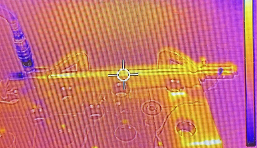

I designed and fabricated a vortex tube, a 100% mechanical device that takes a compressed air stream and outputs a cold and hot stream of air on either side. The compressed air enters a stationary vortex generator that increases the RPM (~1M RPM theoretically) and shoots it down the barrel of the vortex tube. This outer vortex gains heat lost from the inner vortex traveling the other direction. When the outer vortex reaches the end of the barrel it hits an adjustable exhaust valve that diverts some air back down the tube as the inner vortex and allows some air to escape at the hot end. The now inner vortex travels down the barrel losing heat to come out the cold side at a lower temperature.

I used circular steel tubing as the outside shell for the barrel and vortex generator. Compressed air enters the vortex generator chamber tangentially and spins around reaching the terminal RPM before exiting through tangentially drilled holes in the barrel. The exhaust control valve is a conically machined delrin piece that is threaded onto a bolt making it adjustable. When air comes back down the barrel it will pass through an inner tube with an outwards machined conical opening.
Given manufacturing constraints, my custom design was not very efficient. I was able to produce a temperature difference across the hot and cold side of 24.5°F as measured by thermocouples at either end.